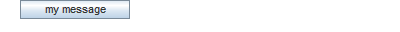

wait([message],[messageafterclick])
The wait-command creates a button on each subject's display.
The experiment does not continue for the affected subject until the button is pressed.
If the current subject display requires the subject to do something, for
example enter a number, the button is disabled until she does so.
Parameters
| message |
Optional. The message to be displayed. If no parameter is given, a standard message is displayed (Continue). |
| messageafterclick |
Optional. The message to be displayed after the subject clicked on the button. If no parameter is given, a standard message is displayed (Please wait for the experiment to continue). |
See also
Examples
Standard wait message
Custom wait message

|

|